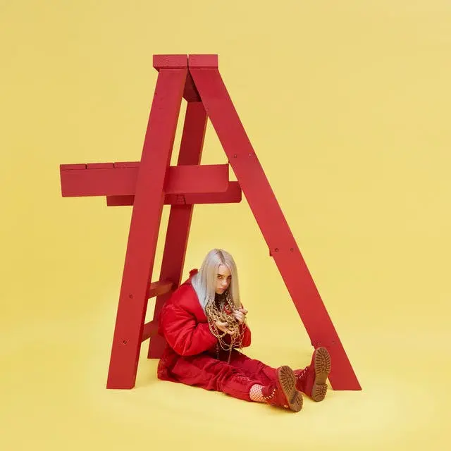
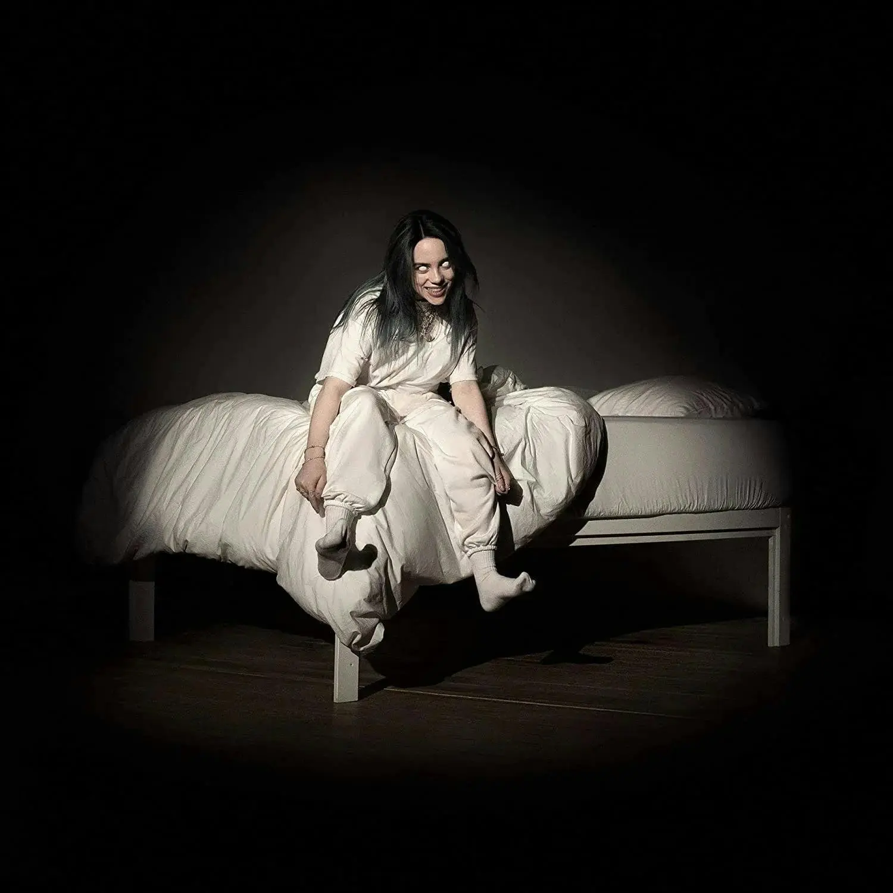
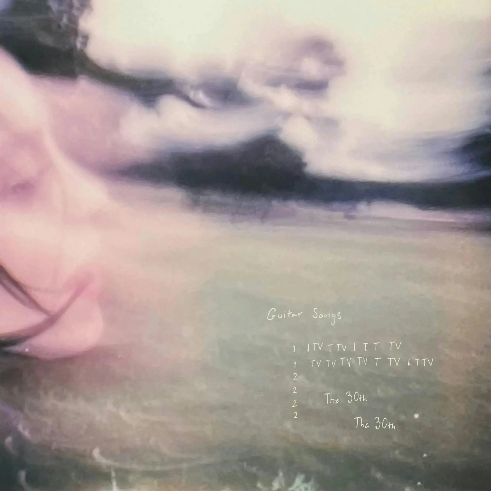

BOLETOS - CONCIERTOS BILLIE EILISH

2017
2019
H T E

2022
THE HISTORY CONTINUE...
.png)
Eilish salió rugiendo de las puertas en 2017 con su EP debut, Don't Smile at Me. Después de volverse viral en SoundCloud, “Ocean Eyes” formó parte oficialmente de este EP en los servicios de transmisión, además de otras ocho canciones producidas y escritas con su hermano. Estableciéndose como una próxima estrella, estas canciones presentaban producción electrónica y letras únicas, como “Quiero estar solo / Solo contigo, ¿tiene sentido? / Quiero robar tu alma / Y esconderte en mi cofre del tesoro” en su canción “Hostage”.
Otras pistas notables de Don't Smile at Me son "Idonwannabeyouanymore", una pista basada en el piano de blues con siete de acordes llenos de suspenso, una firma de tiempo triplicada para una sensación de vals y letras llenas de un significado profundo, y "My Boy". otra pista de jazz con algunos riffs vocales improvisados, piano eléctrico y sintetizadores. Luego, están "Watch" y "&Burn", que contienen exactamente la misma letra pero no podrían sonar más diferentes. "Watch" es la versión más delicada, con piano y un ritmo más ligero, mientras que "&Burn" es más oscura, con un ritmo más pesado, más una voz principal que habla y canta de Eilish y un puente rapeado de Vince Staples.
Dio un giro más oscuro en 2019 con el lanzamiento del álbum debut de Eilish, When We All Fall Asleep, Where Do We Go?. "Bad Guy", quizás la canción más conocida de Eilish hasta la fecha, fue el quinto sencillo del álbum y su primer éxito número uno en el Billboard Hot 100. Contiene letras más sexuales que el primer álbum, además de un bajo más fuerte y pausas instrumentales inspiradas en EDM, esta canción cambió su imagen de una cantante preadolescente a una malhumorada adolescente malhumorada, que también se ve en "My Strange Addiction" y "Bury a Friend". "You Should See Me in a Crown" y "All the Good Girls Go to Hell" amplifican su voz de poder femenino, y "Xanny", "When the Party's Over" y "I Love You" revelan las luchas de ser una adolescente, que incluye experiencias de drogas, fiestas y desamor, todo producido con un bajo profundo, ritmos de baile y el susurrante vibrato de Eilish. Incluso dirigió su primer video musical para "Xanny". Una cosa es segura, este álbum lo tiene todo.
Su álbum de 16 canciones, Happier Than Ever, ha sido un éxito, con grandes letras como las de "Lost Cause", donde Eilish canta: "Pensé que tenías tu mierda bajo control, pero maldita sea, estaba equivocado / No eres nada más que una causa perdida / Y esto no se parece en nada a lo que alguna vez fue”. Desde el principio, es fácil darse cuenta de que Eilish está a la altura del título, con "My Future" y "Lost Cause", dos canciones sobre independizarse y centrarse en sí misma sin una relación. "NDA" y "Therefore I Am" cuentan con una producción electrónica más pesada y letras sobre la reivindicación del poder sobre los hombres y los medios, mientras que "Your Power" detalla cómo superar una relación abusiva. También ha autodirigido varios videos musicales para este álbum, incluidos "Your Power", "Lost Cause" y "NDA". Además de su música que muestra su confianza e independencia en constante cambio, también es evidente a través de su estilo.
En 2022, Eilish lanzó por sorpresa el EP Guitar Songs, que contenía dos nuevas canciones para sus fanáticos, "TV" y "The 30th". En la primera pista, "TV", Eilish abordó los problemas actuales que ocurren en los EE. UU. y cantó: "Y estaré en negación al menos por un tiempo/¿Qué pasa con los planes que hicimos?/Internet se ha vuelto loco viendo estrellas en juicios/Mientras anulan Roe v Wade”. La segunda pista trata sobre un trágico accidente automovilístico en el que estuvo alguien cercano a Eilish. Su letra dice: "¿Qué pasaría si te sucediera en un día diferente?/¿En un puente donde no había un riel en el camino?/O una calle del vecindario donde juegan los niños pequeños?/Estás vivo, estás vivo, estás vivo". Junto con estas dos pistas, Eilish estuvo de gira en 2022 para su álbum Happier Than Ever de febrero a septiembre. Mientras su música continúa tocando corazones, no podemos esperar a ver qué tiene reservado para el futuro.